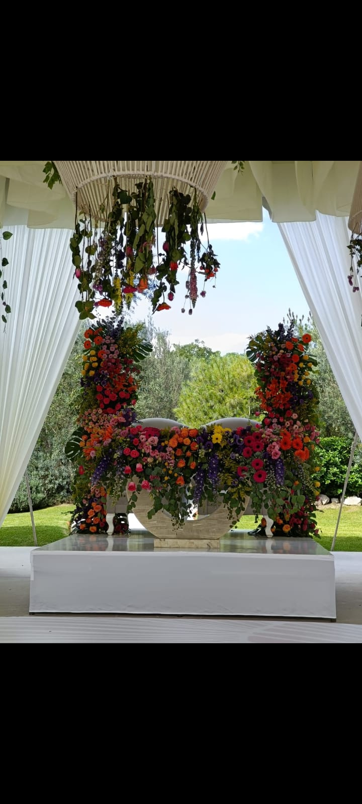

Nombre: Carlos Velez Mendoza
Edad: 19 años
Fecha de nacimiento: 16 de diciembre del 2004
Soy una persona joven, tengo un gato y un ajolote. Nací en Puebla de Zaragoza y actualmente estoy estudiando Desarrollo de Software en la Universidad IEU. Además, tengo una carrera técnica en Informática. Trabajo en una florería donde diseño y creo arreglos florales y ramos. Me interesa seguir aprendiendo y creciendo en el campo de la tecnología y la innovación. Me gusta escuchar a Natanael, Bad Bunny, y Álvaro Díaz; también disfruto fumar y jugar Warzone.
